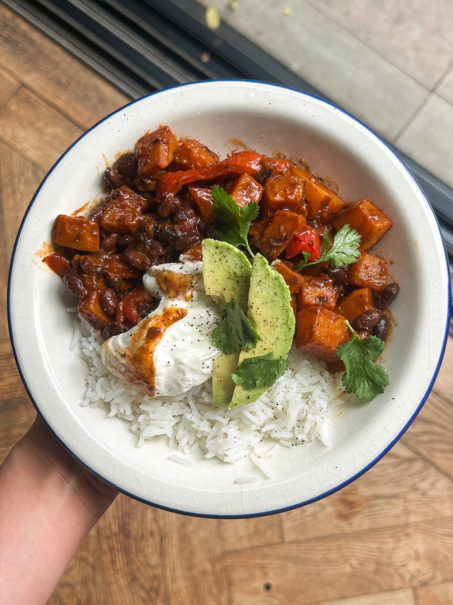

Chipotle Roasted Squash + Black Bean Traybake
Butternut squash, onion and red pepper roasted in one tray with chipotle and smoked paprika, then stirred through with black beans and spooned over rice.

Before you start heat the oven to 200°C fan.
Ingredients
To serve
Method
- Heat the oven to 200°C fan.
- Tip the 2 tbsp olive oil, 1 onion, 1 large red pepper, 1 medium butternut squash, 2 tbsp tomato purée, 1 tbsp honey or maple syrup, 2 tbsp chipotle chilli paste, 1 tsp chilli powder, 1 tsp smoked paprika, 1 tsp dried oregano and ½ tsp ground cinnamon into a large baking dish.
- Add a splash of water, which will help steam the veg as it cooks, and mix everything well to coat.
- Roast for 35-40 minutes, stirring halfway through, until the squash is just tender and the sauce has thickened.
- Take the dish out of the oven and stir through the 2 garlic cloves.
- Tip in the 700g jar of black beans with their liquid and mix well to coat in the spices.
- Roast for a further 5-6 minutes, just to warm the beans through and let them soak up the sauce — you are after a jammy, saucy texture rather than a crisp one.
- Spoon the mixture over the cooked rice.
- Serve with sliced avocado, a dollop of natural yoghurt or sour cream, the coriander and a squeeze of lime.
Notes
- Sweet potato works just as well as the butternut squash.
- Also good loaded onto soft tacos, or stuffed into a burrito.
- Use maple syrup rather than honey, and a plant-based yoghurt or sour cream, to make it vegan.
Source: https://boldbeanco.com/blogs/beanspo-recipes/chipotle-roasted-squash-black-bean-bean-bowls